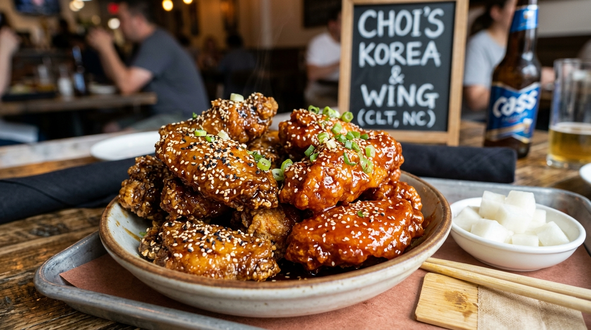

Double-Fried Crispy Wings
Fried twice for an ultra-thin, crackling crust that stays crispy long after glazing in Soy Garlic or Yangnyeom.
Learn Wing Craft →South Charlotte's home for authentic Korean fried chicken. Double-fried to order, hand-brushed with Soy Garlic & Sweet Spicy Yangnyeom glazes, served with hot stone bowl bibimbap and pickled radish.

Family recipes, double-fry crispiness, and hot stone sizzle on Arrowood Road.
Fried twice for an ultra-thin, crackling crust that stays crispy long after glazing in Soy Garlic or Yangnyeom.
Learn Wing Craft →Hot granite stone bowls filled with seasoned vegetables, beef bulgogi, fried egg, and crispy rice bottom.
Explore Dolsot Sizzle →Extensive plant-based Korean menu featuring tofu bulgogi, vegan jajangmyun, and vegetable dumplings.
View Vegan Menu →